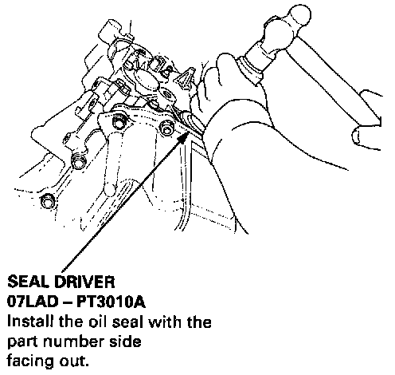
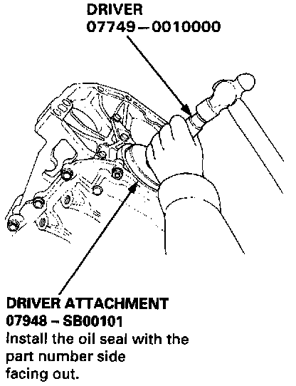

Rear Crankshaft Main Bearing Seal: Service and Repair
CRANKSHAFT OIL SEALS
Installation (Engine Removal Not Required)
NOTE: The crankshaft housing surface should be dry.
Apply a light coat of grease to the crankshaft and to the lips of the seals.
Front

1. Using the special tool, drive in the front crankshaft oil seal until the driver bottoms against the oil pump. When the seal is in place, clean any excess grease off the crankshaft, and check that the front crankshaft oil seal lip is not distorted.
Rear

2. Measure the flywheel-end seal thickness and the oil seal housing depth. Using the special tool, drive the rear crankshaft oil seal into the rear cover to the point where the clearance between the bottom of the rear crankshaft oil seal and the rear cover is 0.5 -0.8 mm (0.02 - 0.03 inch).
NOTE: Align the hole in the driver attachment with the pin on the crankshaft.